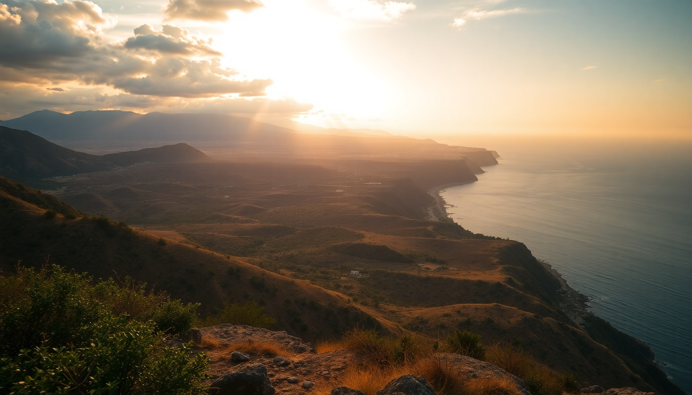

7-Day Mexico Itinerary: Mexico City to Yucatan

This itinerary packs four distinct regions into seven days. It’s not relaxing — you’ll fly, bus, and drive between Mexico City’s museums, Oaxaca’s markets, San Cristóbal’s highland mist, and Mérida’s colonial heat. I did this loop last spring, and while I’d add more days next time, this route gives you a solid taste of each place without feeling like you spent the whole trip in transit.
Is seven days enough for Mexico City, Oaxaca, Chiapas, and Yucatan?
Barely. You’ll need to move fast and book flights between legs. I flew Mexico City to Oaxaca (1 hour), then took a bus from Oaxaca to San Cristóbal (11 hours overnight), and finally flew from Tuxtla Gutiérrez (1.5 hours from San Cristóbal) to Mérida. The overnight bus saved a hotel night and a full day of driving, but it’s not for everyone — the winding mountain roads are rough.
- Day 1-2: Mexico City — focus on one neighborhood, not the whole city
- Day 3: Oaxaca City — markets and mezcal
- Day 4-5: San Cristóbal de las Casas — highland culture and ruins
- Day 6-7: Mérida and Yucatan — cenotes and colonial streets
What should I do in Mexico City with limited time?
I based myself in La Condesa at Hotel Brick, a boutique spot with a rooftop terrace overlooking the tree-lined streets. From there, I walked to Parque México for morning coffee at El Péndulo (a bookshop-café hybrid). For Day 1, skip the sprawling Chapultepec Castle and hit Museo Frida Kahlo in Coyoacán — book tickets a week ahead or you’ll queue for an hour. Lunch at Mercado de Coyoacán for tostadas de pata from the stall at the back corner.
On Day 2, I took an Uber to Teotihuacán (45 minutes, ~$20 USD). Arrive by 8:30 AM to beat the heat and the crowds. Climb the Pyramid of the Sun first — the steps are steeper than they look. Skip the guided tour at the gate; the audio guide from the entrance is cheaper and less scripted.
How do I get from Mexico City to Oaxaca, and what’s worth doing there?
Flew Volaris from Mexico City’s Aeropuerto Internacional Benito Juárez to Oaxaca’s Xoxocotlán Airport — 55 minutes, $60 USD one-way with carry-on. Stayed at Hotel Convento de Oaxaca, a converted 16th-century convent with a courtyard pool. The location on Macedonio Alcalá street is perfect for walking to the Zócalo.
- Mercado 20 de Noviembre: Go for lunch. The tlayudas (crispy tortillas with beans, meat, and cheese) from stall #34 are the best I’ve had.
- Mezcalería In Situ: A serious mezcal bar with 200+ labels. Ask the bartender for a tobalá pour — it’s smoky and floral.
- Monte Albán: 20-minute taxi from town. The ruins sit on a flattened mountain top. Go late afternoon for the light.
I skipped the Hierve el Agua petrified waterfalls — the photos are better than the reality, and the drive takes two hours each way.
Is the overnight bus from Oaxaca to San Cristóbal worth it?
Yes, if you value time over comfort. I booked ADO GL (first-class) from Oaxaca to San Cristóbal — 11 hours, departs 8 PM, arrives 7 AM. The seats recline to nearly flat, and they serve a cold sandwich and water. The road through the Sierra Madre is all curves; bring a Dramamine if you get motion sick.
In San Cristóbal, I checked into Hotel Bo, a design-focused property on Real de Guadalupe. The rooms are sparse but clean, and the rooftop bar has views of the Templo de Santo Domingo. Morning market at Mercado de los Altos for handwoven textiles — haggle politely, starting at half the asking price.
- Cañón del Sumidero: Book a half-day boat tour from the Chiapa de Corzo dock (45 minutes from town). The canyon walls rise 1,000 meters. Crocodiles sun on the banks.
- San Juan Chamula: A 20-minute colectivo ride. The church interior is a shock — no pews, just pine needles on the floor, shamanic rituals, and chickens. No photos allowed inside. It’s not a tourist show; be respectful.
How do I reach Mérida from Chiapas, and what’s the best way to see Yucatan in two days?
From San Cristóbal, I took a shared van (1.5 hours, $15 USD) to Tuxtla Gutiérrez Airport and flew Viva Aerobus to Mérida (1.5 hours, $50 USD). Rented a car from Hertz at the airport — you’ll need it for cenotes and ruins.
- Cenotes: Cenote X’batun (30 minutes from Mérida) is less crowded than Cenote Ik Kil. Swim early, before the tour buses arrive at 10 AM.
- Uxmal: Skip Chichén Itzá if you’re short on time. Uxmal is 45 minutes from Mérida, way less crowded, and the Pyramid of the Magician is more climbable (and Instagrammable).
- Mérida food: Los Almendros for poc chuc (grilled pork in sour orange). Wayane’ for a modern take on cochinita pibil tacos.
I stayed at Hotel Rosas & Xocolate on Paseo de Montejo — it’s a converted mansion with a chocolate-themed spa. The pool is small but welcome after a day in the heat.
FAQ
Can I skip the overnight bus and fly instead? Yes. There are flights from Oaxaca to Tuxtla Gutiérrez via Aeromar, but they’re not daily and cost $100-150 USD. The bus is half the price and saves a night of accommodation, but the flight saves your sleep quality if you’re a light sleeper.
Is it safe to drive in Yucatan? Yes. The highways between Mérida, Uxmal, and the cenotes are well-maintained and well-marked. Police checkpoints are common but routine — keep your rental papers and passport handy. Don’t drive at night outside city limits; livestock and unlit bicycles are hazards.
What should I pack for this trip? Layers. Mexico City and San Cristóbal are cool (60-70°F days, 50°F nights). Oaxaca and Mérida are hot (80-95°F). A light rain jacket for Chiapas’ afternoon showers. Comfortable walking shoes — cobblestones are everywhere. A reusable water bottle with a filter; tap water is not safe anywhere in Mexico.
Conclusion
- Fly between Mexico City and Oaxaca, and from Chiapas to Mérida — the bus between Oaxaca and San Cristóbal is the only one that makes sense.
- Book Museo Frida Kahlo and Teotihuacán entry tickets online at least 48 hours ahead.
- Skip Chichén Itzá in favor of Uxmal if you want fewer crowds and better photo opportunities.
- Eat at Mercado 20 de Noviembre in Oaxaca and Los Almendros in Mérida — both are authentic, not tourist traps.
- Rent a car in Yucatan for flexibility, but stick to daylight driving.